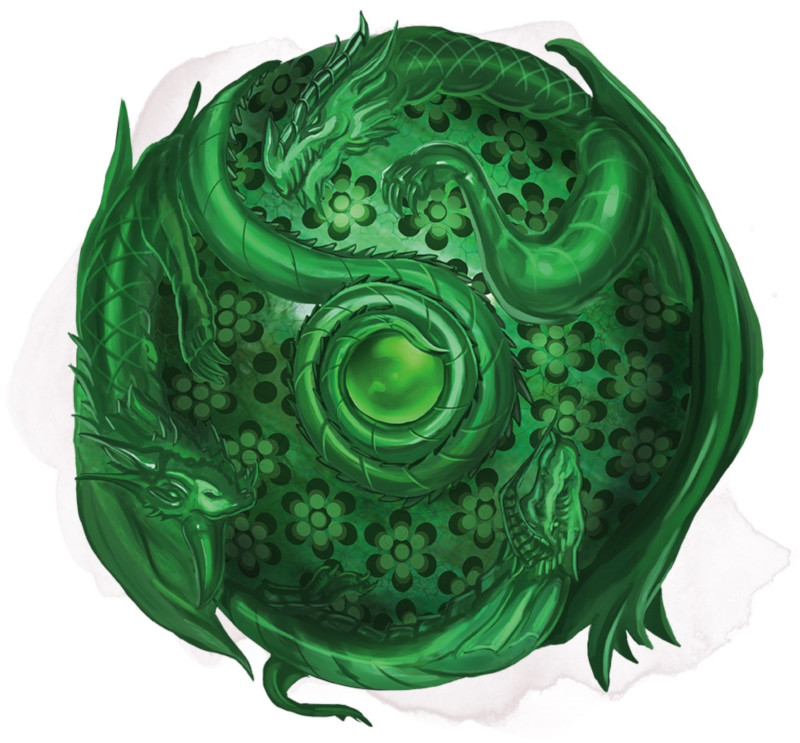

Orbe des dragons
Objet merveilleux, artéfact (nécessite un lien)
Au cours des siècles passés, les elfes et les humains menèrent une terrible guerre contre les dragons malfaisants. Mais alors que le monde semblait courir à sa perte, de puissants magiciens se rassemblèrent et combinèrent leurs pouvoirs les plus puissants pour forger les cinq Orbes des dragons (ou Orbes draconiques) afin d'aider les armées humanoïdes à vaincre les dragons. Un orbe fut amené dans chacune des tours des cinq magiciens, où ils les utilisèrent pour remporter rapidement le conflit. Les magiciens se servirent des orbes pour attirer les dragons jusqu'à eux, puis, grâce à leur puissante magie, détruire les grands reptiles.
Comme les tours des magiciens s'effondrèrent quelques siècles plus tard, les orbes furent détruits ou relégués au rang de simple légende. Seuls trois d'entre eux existent encore. Leur magie a été altérée et pervertie au fil des siècles, et bien que leur capacité première d'appel des dragons fonctionne encore, ils permettent également, dans une certaine mesure, de contrôler les dragons.
Chaque orbe contient l'essence d'un dragon mauvais, une présence qui ne tolère pas qu'on tente de se servir de la magie de l'orbe. Ceux qui n'ont pas une personnalité suffisamment forte pourraient bien se retrouver asservis à l'orbe.
Un orbe est un globe de cristal sculpté de 25 centimètres de diamètres. Lorsqu'il est utilisé, il grandit jusqu'à atteindre un diamètre de 50 centimètres, et de la fumée apparaît et se met à tourbillonner à l'intérieur.
Tant que vous êtes lié à un orbe, vous pouvez utiliser une action pour fixer les profondeurs de l'orbe et prononcer son mot de commande. Vous devez ensuite effectuer un jet de Charisme DD 15. Si le jet est réussi, vous contrôlez l'orbe aussi longtemps que vous restez lié à lui. En cas d'échec au jet, vous êtes charmé par l'orbe aussi longtemps que vous restez lié à lui.
Tant que vous êtes charmé par l'orbe, vous ne pouvez pas volontairement mettre fin à votre lien, de plus l'orbe lance le sort suggestion sur vous à volonté (sauvegarde DD 18), vous exhortant à travailler d'arrache-pied à ses propres objectifs maléfiques. L'essence du dragon se trouvant dans l'orbe pourrait vouloir de nombreuses choses : le génocide d'un peuple particulier, être libéré de l'orbe, répandre la souffrance et la destruction sur le monde, développer le culte de Tiamat, ou quelque chose d'autre suivant la décision du MD.
Propriétés aléatoires. Un Orbe des dragons possède un certain nombre de propriétés déterminées aléatoirement :
• 2 propriétés mineures bénéfiques
• 1 propriété mineure néfaste
• 1 propriété majeure néfaste
Sorts. L'orbe possède 7 charges et récupère 1d4 + 3 charges dépensées chaque jour à l'aube. Si vous contrôlez l'orbe, vous pouvez utiliser une action et dépenser 1 charge ou plus pour lancer l'un des sorts suivants (sauvegarde DD 18) grâce à lui : soins (emplacement de sort niveau 5, 3 charges), lumière du jour (1 charge), protection contre la mort (2 charges) ou scrutation (3 charges).
Vous pouvez également utiliser une action pour lancer le sort détection de la magie depuis l'orbe sans utiliser de charge.
Appel des dragons. Tant que vous contrôlez l'orbe, vous pouvez utiliser une action pour que l'orbe lance un appel télépathique dans toutes les directions à 60 kilomètres à la ronde. Les dragons mauvais à portée se sentent obligés de venir vers l'orbe aussi vite que possible et par le chemin le plus direct. Les divinités dragons, comme Tiamat, ne sont pas affectées par cet appel. Les dragons que vous avez contraints par l'orbe pourraient bien vous être hostiles à leur arrivée. Une fois que vous avez utilisé cette propriété, elle ne peut plus l'être de nouveau pendant 1 heure.
Détruire un orbe. Un Orbe des dragons semble fragile mais il est en réalité insensible à la plupart des dégâts, dont les attaques et souffles des dragons. Cependant, un sort de désintégration ou un bon coup infligé par une arme magique +3 sont suffisants pour détruire l'orbe.
Comme les tours des magiciens s'effondrèrent quelques siècles plus tard, les orbes furent détruits ou relégués au rang de simple légende. Seuls trois d'entre eux existent encore. Leur magie a été altérée et pervertie au fil des siècles, et bien que leur capacité première d'appel des dragons fonctionne encore, ils permettent également, dans une certaine mesure, de contrôler les dragons.
Chaque orbe contient l'essence d'un dragon mauvais, une présence qui ne tolère pas qu'on tente de se servir de la magie de l'orbe. Ceux qui n'ont pas une personnalité suffisamment forte pourraient bien se retrouver asservis à l'orbe.
Un orbe est un globe de cristal sculpté de 25 centimètres de diamètres. Lorsqu'il est utilisé, il grandit jusqu'à atteindre un diamètre de 50 centimètres, et de la fumée apparaît et se met à tourbillonner à l'intérieur.
Tant que vous êtes lié à un orbe, vous pouvez utiliser une action pour fixer les profondeurs de l'orbe et prononcer son mot de commande. Vous devez ensuite effectuer un jet de Charisme DD 15. Si le jet est réussi, vous contrôlez l'orbe aussi longtemps que vous restez lié à lui. En cas d'échec au jet, vous êtes charmé par l'orbe aussi longtemps que vous restez lié à lui.
Tant que vous êtes charmé par l'orbe, vous ne pouvez pas volontairement mettre fin à votre lien, de plus l'orbe lance le sort suggestion sur vous à volonté (sauvegarde DD 18), vous exhortant à travailler d'arrache-pied à ses propres objectifs maléfiques. L'essence du dragon se trouvant dans l'orbe pourrait vouloir de nombreuses choses : le génocide d'un peuple particulier, être libéré de l'orbe, répandre la souffrance et la destruction sur le monde, développer le culte de Tiamat, ou quelque chose d'autre suivant la décision du MD.
Propriétés aléatoires. Un Orbe des dragons possède un certain nombre de propriétés déterminées aléatoirement :
• 2 propriétés mineures bénéfiques
• 1 propriété mineure néfaste
• 1 propriété majeure néfaste
Sorts. L'orbe possède 7 charges et récupère 1d4 + 3 charges dépensées chaque jour à l'aube. Si vous contrôlez l'orbe, vous pouvez utiliser une action et dépenser 1 charge ou plus pour lancer l'un des sorts suivants (sauvegarde DD 18) grâce à lui : soins (emplacement de sort niveau 5, 3 charges), lumière du jour (1 charge), protection contre la mort (2 charges) ou scrutation (3 charges).
Vous pouvez également utiliser une action pour lancer le sort détection de la magie depuis l'orbe sans utiliser de charge.
Appel des dragons. Tant que vous contrôlez l'orbe, vous pouvez utiliser une action pour que l'orbe lance un appel télépathique dans toutes les directions à 60 kilomètres à la ronde. Les dragons mauvais à portée se sentent obligés de venir vers l'orbe aussi vite que possible et par le chemin le plus direct. Les divinités dragons, comme Tiamat, ne sont pas affectées par cet appel. Les dragons que vous avez contraints par l'orbe pourraient bien vous être hostiles à leur arrivée. Une fois que vous avez utilisé cette propriété, elle ne peut plus l'être de nouveau pendant 1 heure.
Détruire un orbe. Un Orbe des dragons semble fragile mais il est en réalité insensible à la plupart des dégâts, dont les attaques et souffles des dragons. Cependant, un sort de désintégration ou un bon coup infligé par une arme magique +3 sont suffisants pour détruire l'orbe.
Dungeon Master´s Guide (SRD)
